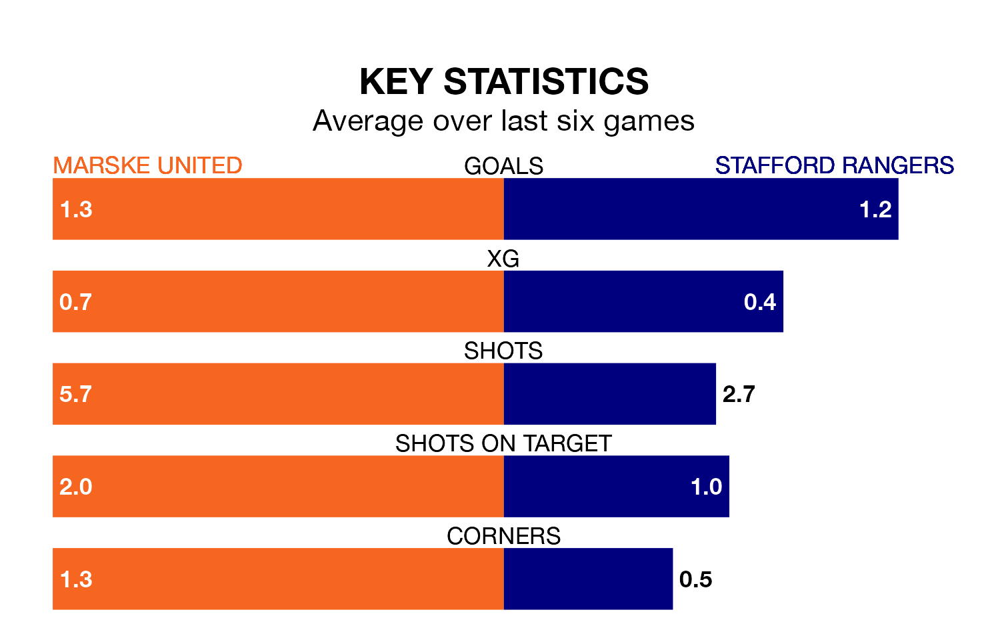

Saturday's match at the GER Stadium sees two relegation candidates play each other, as 19th-ranked Marske United host 21st-placed Stafford Rangers.
Marske have picked up 21 points from their first 21 Northern Premier League games, with seven wins and no draws.
That is four points more than Stafford have collected, having won five and drawn two.
Marske are in mixed form in Northern Premier League, with three wins and three losses from their last six games.
With two wins and four losses over that period, Stafford's form is worse – they have taken six points from 18, compared to United's nine.
With 27 goals in 28 games so far this season, Rangers are the league's lowest scorers with 1.0 goals per game. And they are conceding more than average, letting in 62 goals at a rate of 2.2 per game.
The home team are also below average scorers, with 1.4 goals per game, compared to a league average of 1.7. They have conceded 2.4 goals per game.
Over the last two years, Marske and Stafford have played each other twice. They won one each.
Their last meeting was on January 28 2023, when Stafford won 2-0 at home.
Marske's last match was on December 30, a 2-0 loss against Morpeth Town.
Stafford lost 2-0 against Ilkeston Town last time out, on January 27.
Updated: 10:03 (UTC), 30/01/24